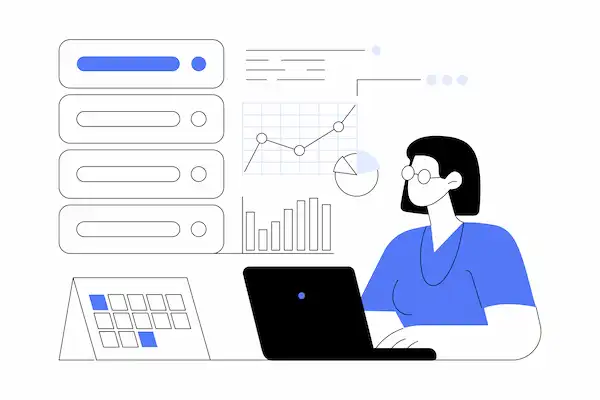
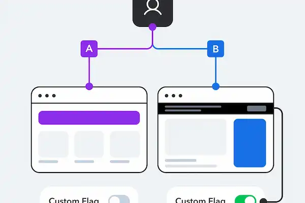

AI-Powered Growth Strategies
Artificial Intelligence is transforming how organizations acquire, engage, and retain customers. The following strategies represent some of the most impactful applications of AI in Product Marketing and Growth.
Personalization at Scale
AI enables businesses to deliver personalized content, recommendations, and messaging based on customer behavior and preferences. Modern personalization systems can adapt website content, email campaigns, and product recommendations in real time.
This improves customer engagement and creates more relevant experiences throughout the customer journey.

Predictive Analytics
Predictive analytics uses machine learning algorithms to forecast future customer behavior based on historical data.
Growth teams can identify customers likely to churn, predict conversion opportunities, and prioritize high-value segments.
Marketing Automation
AI-powered automation helps teams streamline repetitive processes such as email campaigns, lead nurturing, audience segmentation, and reporting.
Automation allows marketing professionals to focus on strategic initiatives rather than manual tasks.

Experimentation and Optimization
AI helps organizations analyze experiments faster and uncover patterns that may not be obvious through manual review.
This accelerates A/B testing, improves conversion optimization, and supports data-driven decision-making.